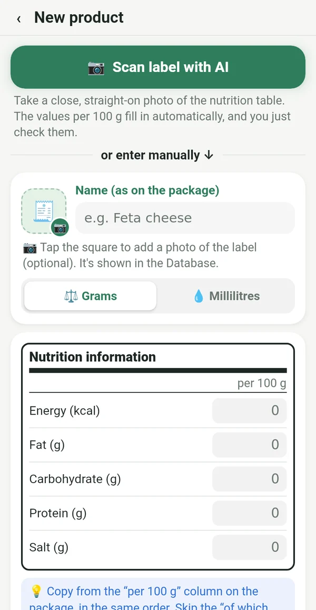
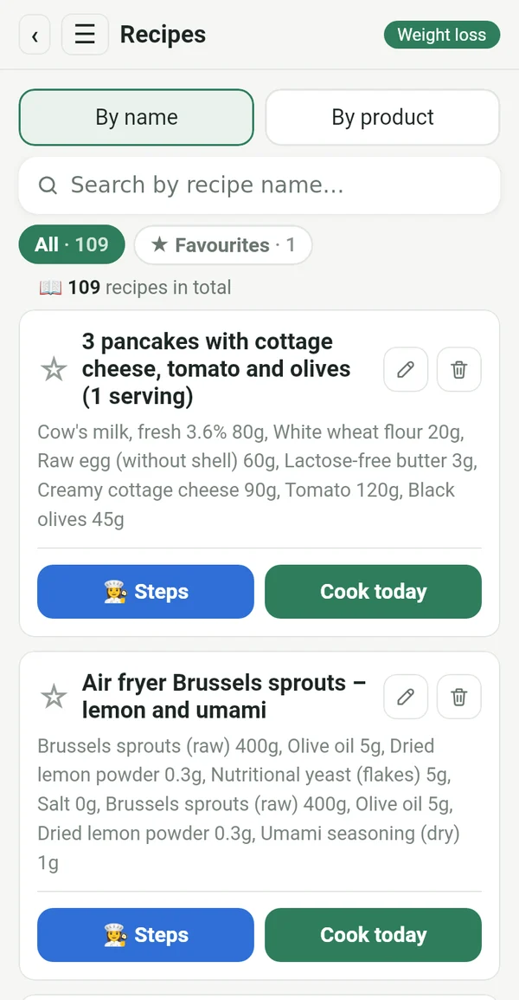
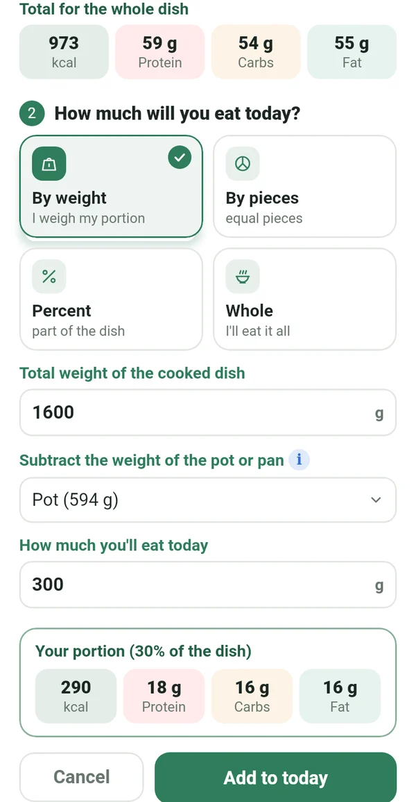
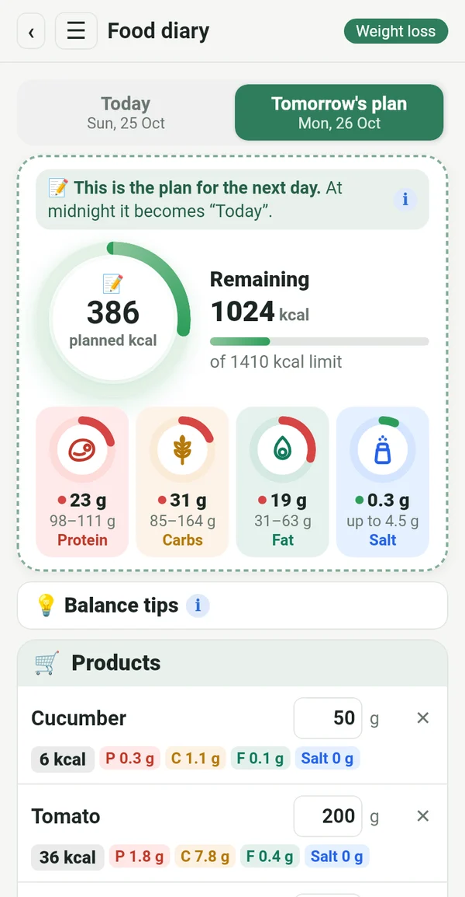
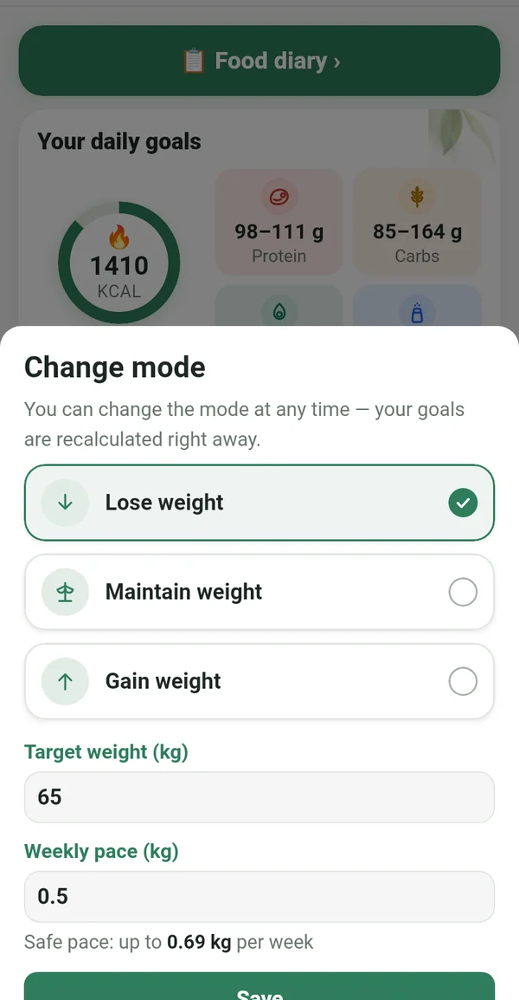
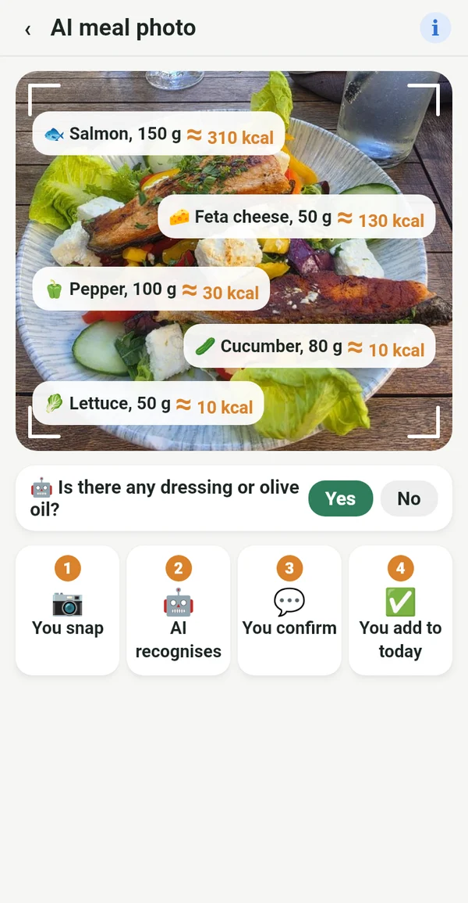

Everything you need, nothing you don't

From the label, not from someone else's database
Copy the values per 100 g from the pack, or simply take a photo of the label. The numbers match what you actually eat.
📷 An AI photo of the label fills in the fields for you
Your digital cookbook
Recipes from grandma's notebook, the cookbooks on your shelf and your favourite groups, all in one place. Enter them once and use them forever.

Your exact portion from the whole pot
Weigh the finished dish together with the pot. Macrolia subtracts the pot and works out exactly how much you ate.

Plan, shop, eat
Enter today what you'll eat tomorrow. Buy only what you need, and at midnight the plan becomes your day.

Lose, maintain or gain weight
When you reach your goal, switch to maintenance. If life changes, simply switch the mode. Your daily limit follows the Mifflin-St Jeor equation and clinical guidelines, at a safe pace.

Know what you eat when you eat out
Take a photo of your plate and AI recognises what's on it. The value is an estimate, marked with ≈. Better an estimate than nothing.
Calories from activity
Through Health Connect, from your phone, a watch or a fitness app. You choose how much is added to your limit.
Weight, chart, report
A weight chart, private before-and-after photos and a report in PDF and Excel.
Balance tips
Short hints when protein or fat is off target. It helps, it doesn't boss you around.
For every woman who wants to stay on track
The yo-yo doesn't come from the diet. It comes when you stop.
After the baby, you get back on track.
Age is no reason to give up.
Even at a restaurant, you know what to order.
Follow the plan exactly, get exactly the result.
Your data stays yours
Everything stays on your phone. No sign-up, no ads, no tracking. A photo for AI analysis is sent only for the calculation and is not stored.
Subscription
Monthly or yearly subscription, both with 7 days free. Cancel any time in Google Play.
In 14 languages, with a light and a dark theme.
Questions
When is the app coming out?
We are preparing the launch on Google Play. Write to us and we'll let you know when it's ready.
Is there an iPhone version?
For now it's Android only. An iPhone version is planned for later.
Why is there no barcode scanner?
Barcode databases are filled in by users and are often wrong or out of date. In Macrolia every value comes from the label, so the numbers are accurate.
How many AI photos can I take?
Up to 100 photos a month, for labels and meals together.